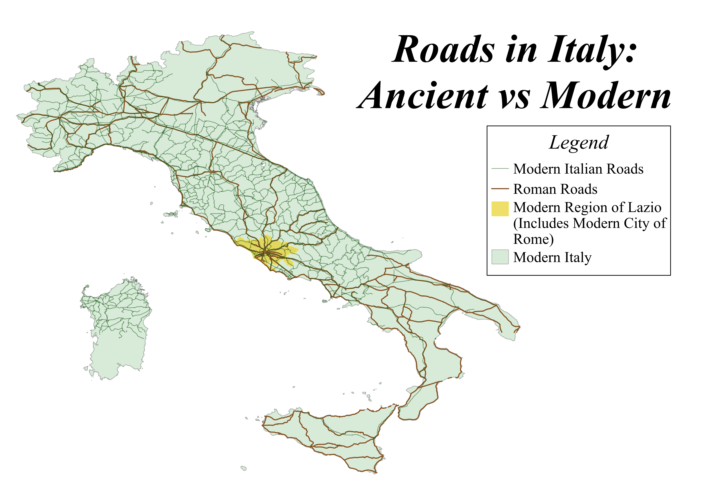

Modern vs Ancient Road Comparison
Do modern major Italian roads follow the same paths as ancient Roman major roads? How much deviation has occurred over the last 2,000 years?
As an archaeology major with an interest in the classical world, I think comparisons between ancient and modern ways of life are particularly interesting. Due to Italy's arguably complicated geography (being a peninsula with the Apennine Mountains running down the middle) and the technical building skills applied in Roman road construction, I was curious to see how much the major pathways through Italy have changed over the last 2,000 years. Looking at my map, one can see that many major modern roads (seen in dark green) follow ancient routes (seen in brown) closely, in some cases almost perfectly.

Data used for this project
Italian provinces Shapefile
Ancient Roman roads Shapefile (Sourced from the Ancient World Mapping Center)
Modern Italian roads Shapefile